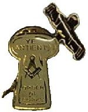
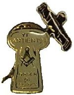

Radlett Cork Lodge
The Masonic Hall Radlett harbours the Radlett Cork Lodge, one of several independent Cork Lodges derived from Scottish tradition who, in 2012, formed the ‘Grand Fleet of Cork Lodges’. Some of the older Lodges have histories originating without reference to the ‘Great Board of Corks’, and may properly be considered independent of that body.
Lodges associated with the Grand Fleet of Independent Cork Lodges:
- Radlett Cork Lodge,
Hertfordshire - Itchen Cork Lodge,
Hampshire - Nelson Cork Lodge,
Beaconsfield, Bucks
- Wantsum Cork Lodge,
Broadstairs, Kent - Floating Corks of Devonshire, Devon
- Wildfire Cork Lodge,
Kent
- Bristol Citte,
Bristol - Milton Keynes Cork,
Bucks - Brayford Cork,
Lincs
‘The Cork’ as it is universally and informally well known, is described as a ‘fun degree’; allied to Freemasonry although not formally recognised by any Grand Lodge. The earliest records, manuscripts, and regalia are held by the Grand Lodge of Mark Master Masons, although the origins of the Degree are unknown. Before the Second World War there are various references to English Mark Lodges working the Cork degree at dinner after their formal Mark meeting. A body known as the ‘Great Board of Corks’, presided over by the Great Admiral and consisting of senior Grand Officers of Mark Grand Lodge, controlled the Cork Degree for many years, but fell into abeyance. By 2002 it had been revived, with at least one surviving member of the original Great Board. Additionally, at least one Board of Corks under the authority of the Great Board, has survived the passage of time. English bodies styling themselves as a 'Board of Corks' fall under the jurisdiction of this Board.
Boards authorised by the Great Board of Corks:
- The Alt Board of Corks, No.1, Ormskirk
- The Isis Board of Corks, No.2, Oxford
- The Wenning Board of Corks, No.3, Morecambe
- The Fleet Board of Corks, No.4, London
- The Dee Board of Corks, No.5, Chester
- The Serpentine Board of Corks, No.6, London
- The Wyre Board of Corks, No.7, Blackpool
- The Croal Board of Corks, No.8, Boulton
- The Estuary Board of Corks, No.9, Shenfield
The name is derived from the organization's emblem of a cork with a corkscrew inserted at an angle. The principle aim of The Cork is is to raise money preferably for children's charities with no deductions being being made for administrative expences. The ritual, being based in the era of Noah and the ‘Great Flood’, is satirical and is distinctly nautical in form with the Officers, who roughly equate to the Officers of Craft Lodge, all having naval titles.
Officers of the Radlett Cork Lodge:
- Rather Worshipful
Admiral - Uncommonly Worshipful Mate
- Highly Worshipful
Purser - Hardly Worshipful
Lookout
- Nearly Rather Worshipful
Vice Admiral - Undoubtedly
Ship's Writer - Little Less Worshipful Doctor
- Barely Worshipful
Cook
- Mainly Worshipful
Bosun - Particularly Worthy
Screw - Almost Worthy
Carpenter - Particularly Worthy
Shipmate
Radlett Cork Lodge
The Radlett Cork Lodge meets twice a year on Saturday afternoon near to the autumnal
and vernal equinox. Meetings tend to be high spirited, boisterous affairs with the
initiation ceremony taking precedence. The festivities which follow may be a three-
Membership is open to Master Masons in good standing who are either a Master, Past
Master, or Warden of a Craft Lodge, or a Companion in the Holy Royal Arch. Membership
is not financially onerous with costs being a small, one-
If this has wetted your appetite for an evening of fun with fellow Brethren, then ask a ‘Corky’ to propose you but if you don’t know one, contact the (detail to be added), or ask at the bar!
© 2017 Masonic Hall (Radlett) Ltd. All Rights Reserved.
Copyright of Material: The Masonic Hall (Radlett) Ltd logo, photographic images, graphics and content is protected by copyright may not be copied, used, or distributed in any form or manner without the expressed permission of the Masonic Hall (Radlett) Ltd. If you wish to use, or copy, any of the information contained on this website, please write to: Company Secretary, Masonic Hall (Radlett) Ltd., The Rosewalk, Radlett, WD7 7JS.
Disclaimer:We do not guarantee that websites accessed via links on this page are either Masonic in nature or have been approved or endorsed by the United Grand Lodge of England. We specifically do not warrant that another website accessible from their pages are recognised by, or have the approval of, the United Grand Lodge of England.